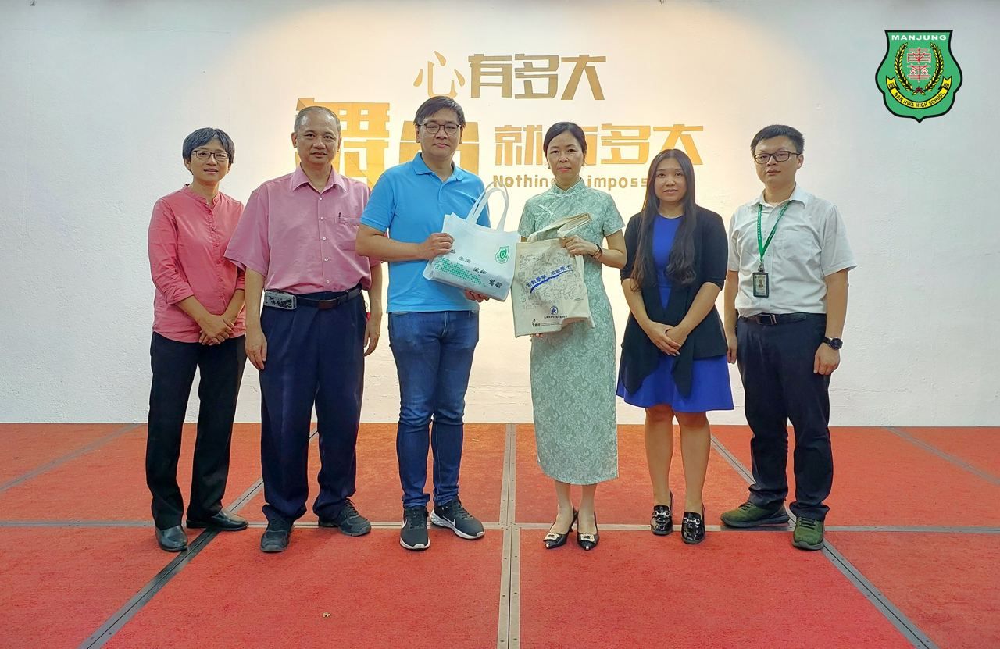

董总独中教育研究与发展组到访交流
董总独中教育研究与发展组到访交流
共商教育蓝图进展与落实
董总独中教育研究与发展组秘书室主任江伟俊日前率领其团队，随行人员包括有黄集初博士、陈喜月课程局高级执行员与曾观慧执行员莅临曼绒南华独立中学针对《独中教育蓝图》相关课题进行工作进展汇报与交流。
黄集初博士在交流中表示，此蓝图自2018年8月推出以后，时刻在华文教育既定的使命和已有的基础上，借鉴现今世界最新教改成果，始终对独中教师教育发展方面作出努力，如强化独中教师人才储备机制及薪资福利、贯彻课程领导于新课纲核心素养的师资培训、维护与发展教师专业形象和地位以及建立和完善华文独中师资培育体系。此行正积极访校交流以追踪各校进展与交换意见。
校长陈丽冰博士在交流中则强调，教育大蓝图自推行以后，应加紧脚步从理论真正落实到实践的阶段，好让学生能够更早受惠，真正做到提高教育改革的公平性和包容性，满足新世代学生的学习需求。
#董总 #独中教育蓝图 #独中教育研究与发展组
#南华独中 #曼绒 #实兆远
